ផែនទីប្រទេស
រុករកកម្ពុជាតាមផែនទី
ជ្រើសរើសខេត្តមួយខាងក្រោម ដើម្បីរំលោតទៅមើលព័ត៌មានលម្អិត

ចាប់ពីប្រាសាទបុរាណដ៏អច្ឆរិយនៃអង្គរ រហូតដល់ឆ្នេរសមុទ្រថ្លា ភ្នំបៃតង និងជីវិតវប្បធម៌ដ៏សម្បូរបែប — សូមអញ្ជើញរុករកគ្រប់ជ្រុងជ្រោយនៃប្រទេសកម្ពុជា។
រាជធានីភ្នំពេញ និងខេត្តទាំង ២៤ នីមួយៗមានអត្តសញ្ញាណ ធម្មជាតិ និងរឿងរ៉ាវផ្ទាល់ខ្លួន។ ចុចលើកាតដើម្បីស្វែងយល់បន្ថែម។
ទីក្រុងរដ្ឋធានីដ៏មមាញឹក លាយបញ្ចូលគ្នារវាងស្ថាបត្យកម្មបារាំងចាស់ និងជីវិតទំនើប តាមដងទន្លេចតុមុខ។
ព្រះបរមរាជវាំង ស្វែងយល់បន្ថែមខេត្តព្រំដែនភាគពាយព្យ ជាទ្វារចូលទៅកាន់តំបន់ប្រាសាទបុរាណនៅភាគខាងជើងប្រទេស។
ប្រាសាទបន្ទាយឆ្មារ ស្វែងយល់បន្ថែម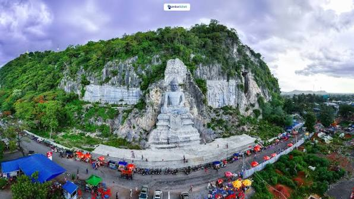
ខេត្តល្បីឈ្មោះដោយផ្ទះបែបអាណានិគមបារាំង ស្រែស្រូវទូលាយ និងបទពិសោធន៍រថភ្លើងឫស្សី។
វត្តភ្នំសំពៅ ស្វែងយល់បន្ថែម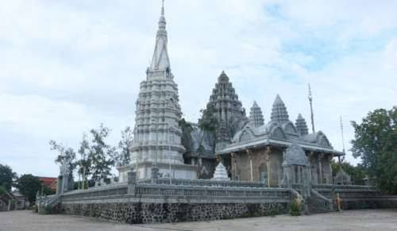
ខេត្តតាមដងទន្លេមេគង្គ ដែលមានវត្តអារាមបុរាណ និងស្ពានឫស្សីរដូវប្រាំង។
វត្តភ្នំប្រុសភ្នំស្រី ស្វែងយល់បន្ថែម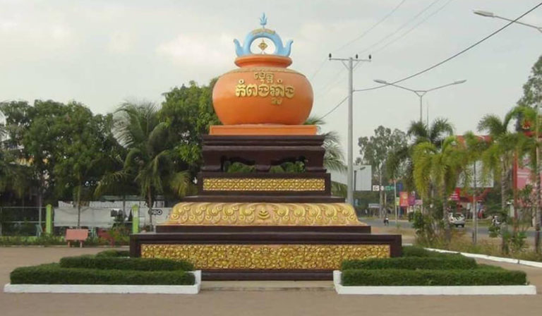
ស្រុកកំណើតសិប្បកម្មដីឥដ្ឋប្រពៃណីខ្មែរ នៅមាត់ទន្លេសាបដ៏ធំទូលាយ។
ភូមិសិប្បកម្មដីឥដ្ឋ ស្វែងយល់បន្ថែម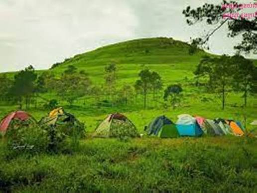
ស្រុកកំណើតភ្នំឱរ៉ាល់ជម្រាលខ្ពស់បំផុតរបស់ប្រទេស និងចម្ការស្កររត្នោតដ៏ល្បីល្បាញ។
ភ្នំឱរ៉ាល់ ស្វែងយល់បន្ថែម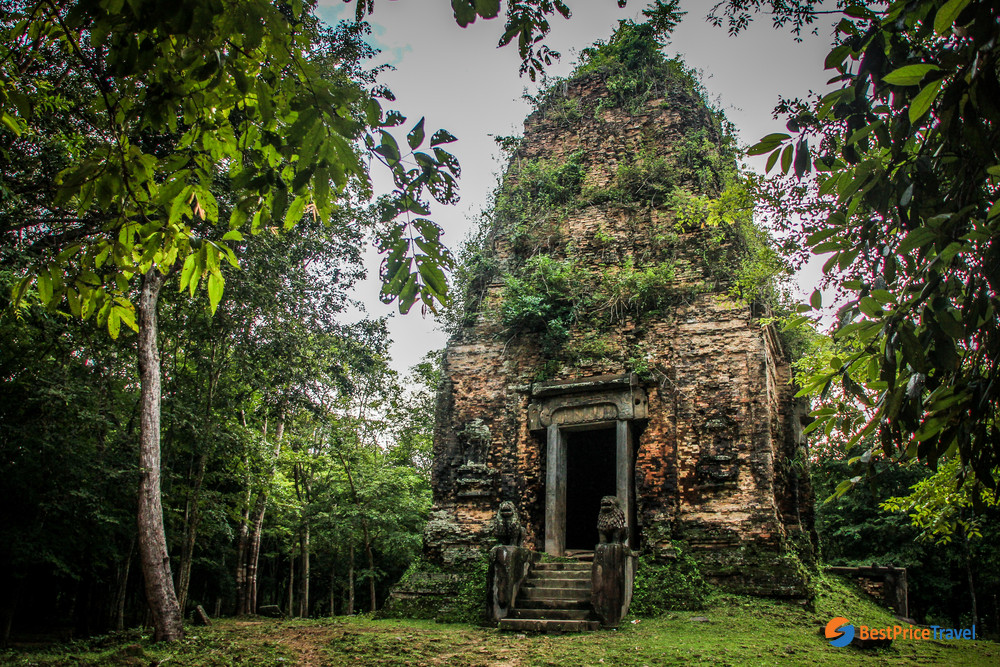
ជាកន្លែងកំណើតនៃប្រាសាទបុរេអង្គរដ៏សំខាន់ដែលបង្ហាញអំពីអរិយធម៌ខ្មែរដើម។
ប្រាសាទសំបូរព្រៃគុក ស្វែងយល់បន្ថែម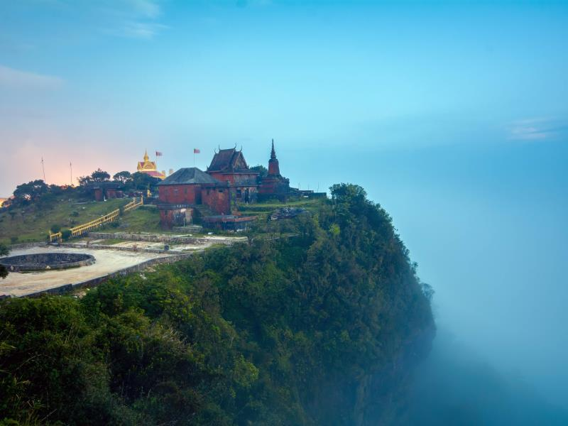
ទីក្រុងបែបអាណានិគមតាមមាត់ទន្លេ ព័ទ្ធជុំវិញដោយភ្នំមេឃ និងចម្ការម្រេចដ៏ល្បីលើពិភពលោក។
ភ្នំបូកគោ ស្វែងយល់បន្ថែម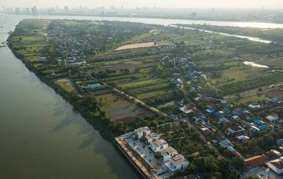
ខេត្តព័ទ្ធជុំវិញរាជធានីភ្នំពេញ សម្បូរទៅដោយភូមិកសិកម្ម និងសិប្បកម្មប្រពៃណី។
កោះឧកញ៉ាតី ស្វែងយល់បន្ថែម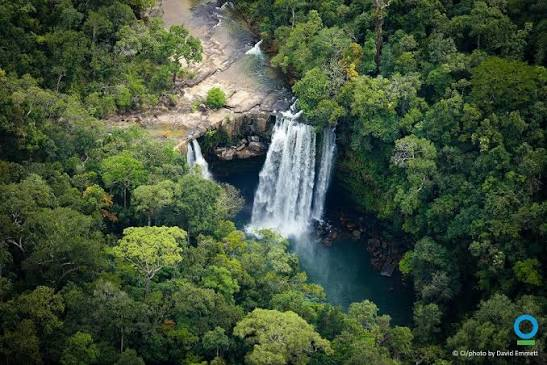
ព្រៃភ្នំក្រវាញដ៏បរិសុទ្ធជាប់ជាមួយឆ្នេរសមុទ្រ និងកោះស្ងប់ស្ងាត់ជាច្រើន។
ព្រៃភ្នំក្រវាញ ស្វែងយល់បន្ថែមជម្រកចុងក្រោយមួយក្នុងចំណោមតិចតួចនៃត្រីផ្សោតទន្លេមេគង្គដ៏កម្រ។
ត្រីផ្សោតអៀរ៉ាវ៉ាឌី ស្វែងយល់បន្ថែម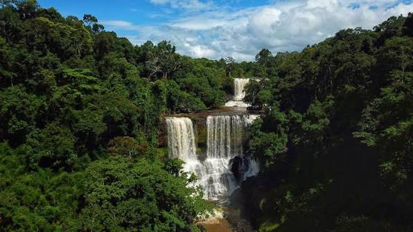
ខ្ពង់រាបបៃតងខ្យល់ត្រជាក់ ជម្រកដំរីព្រៃ និងទឹកជ្រោះស្រស់ស្អាតជាច្រើន។
ទឹកជ្រោះប៊ូស្រា ស្វែងយល់បន្ថែម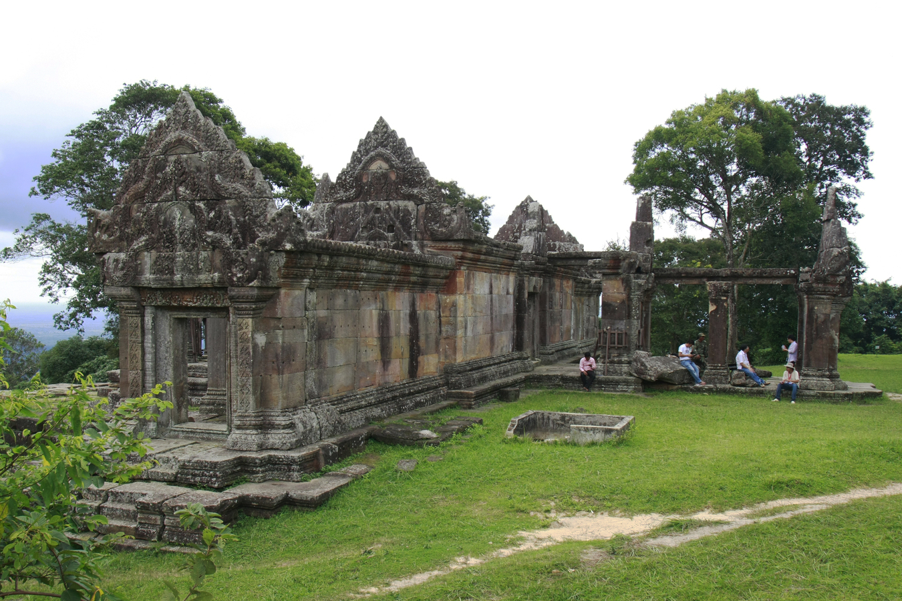
ស្រុកកំណើតប្រាសាទបុរាណដ៏អច្ឆរិយស្ថិតនៅលើកំពូលភ្នំដងរែក មើលឃើញទេសភាពដ៏ទូលាយ។
ប្រាសាទព្រះវិហារ ស្វែងយល់បន្ថែម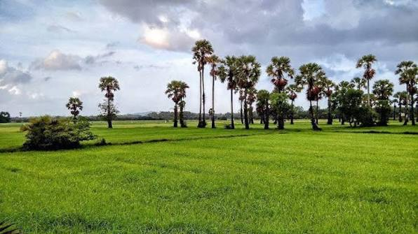
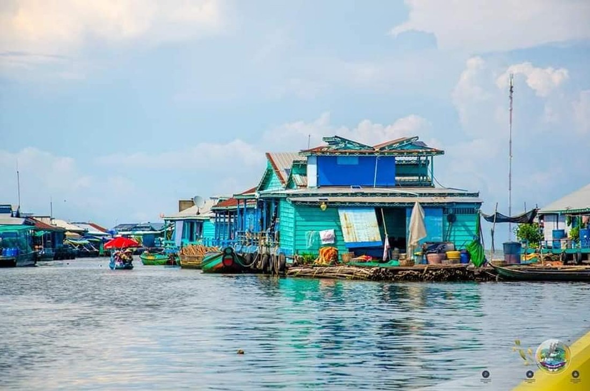
ជើងភ្នំក្រវាញភាគខាងកើត និងភូមិអណ្ដែតទឹកនៅលើបឹងទន្លេសាបដ៏ធំបំផុតក្នុងតំបន់។
ភូមិអណ្ដែតទឹក ស្វែងយល់បន្ថែម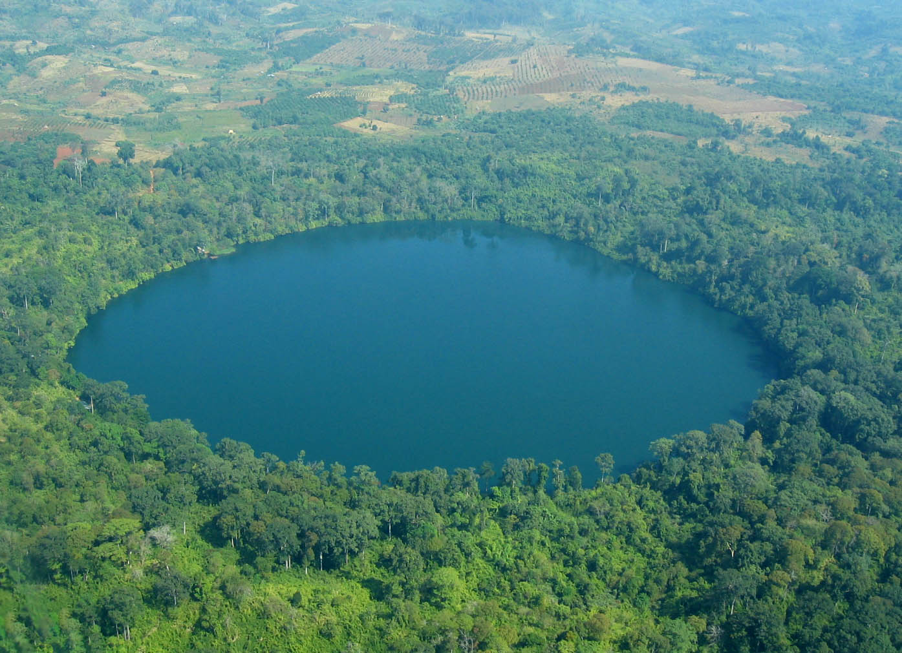
ខ្ពង់រាបព្រៃឈើបៃតងជ្រុលជ្រៅ និងបឹងភ្នំភ្លើងបុរាណទឹកថ្លាមិនគួរឲ្យជឿ។
បឹងយក្សឡោម ស្វែងយល់បន្ថែមទីក្រុងទ្វារនៃមហាអច្ឆរិយអង្គរវត្ត កន្លែងកំណើតនៃអរិយធម៌ខ្មែរដ៏រុងរឿង។
ប្រាសាទអង្គរវត្ត ស្វែងយល់បន្ថែម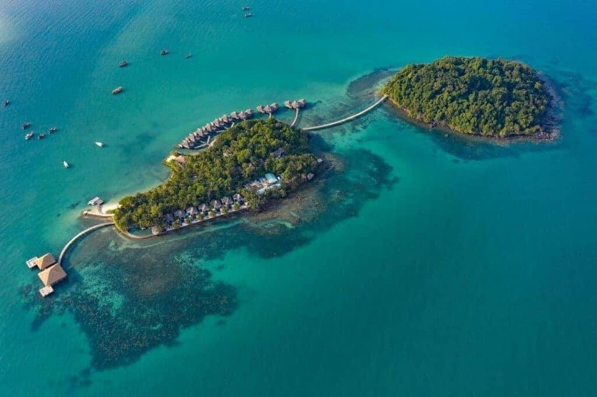
ខេត្តឆ្នេរសមុទ្រពេញនិយមបំផុត មានឆ្នេរខ្សាច់ស ព្រមទាំងកោះទេសចរណ៍ជាច្រើន។
កោះរ៉ុង ស្វែងយល់បន្ថែម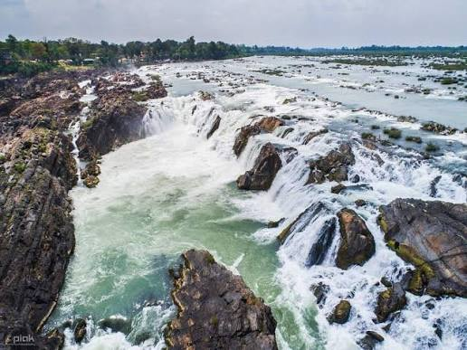
ចំណុចប្រសព្វទន្លេមេគង្គ និងទន្លេសេកុង ព័ទ្ធជុំវិញដោយព្រៃឈើដ៏បរិសុទ្ធ។
ទឹកជ្រោះព្រះនិម្មិត ស្វែងយល់បន្ថែម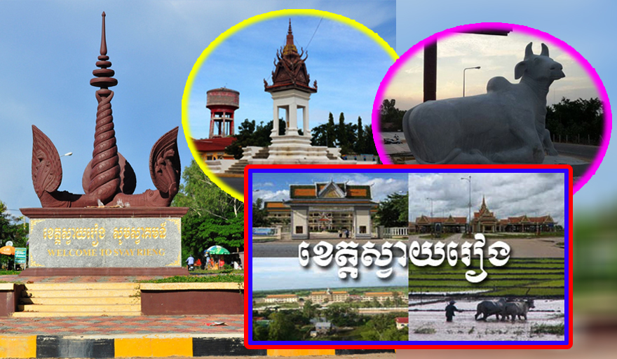
ខេត្តព្រំដែនវៀតណាម ដីធ្លីកសិកម្មសម្បូរបែប និងជីវិតទីផ្សារព្រំដែនរស់រវើក។
ទីផ្សារព្រំដែន ស្វែងយល់បន្ថែម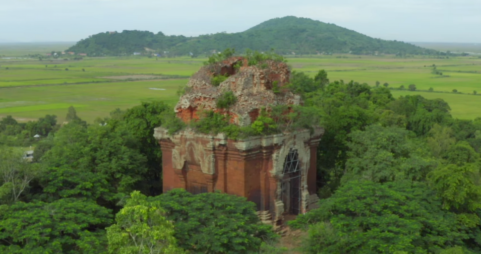
ត្រូវបានចាត់ទុកជាឃ្លាំងអរិយធម៌បុរេអង្គរ កន្លែងកំណើតនៃនគរភ្នំដ៏ចាស់ជាង។
ប្រាសាទភ្នំដា ស្វែងយល់បន្ថែម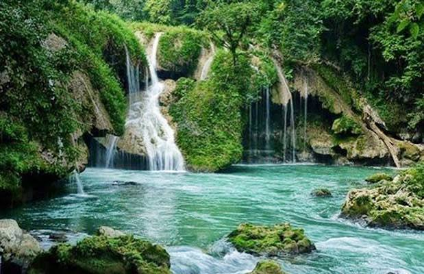
ខេត្តព្រំដែនភាគខាងជើងដ៏ស្ងប់ស្ងាត់ គ្របដណ្ដប់ដោយព្រៃឈើធម្មជាតិទូលាយ។
ព្រៃឈើធម្មជាតិ ស្វែងយល់បន្ថែមទីក្រុងឆ្នេរតូចមួយដែលល្បីល្បាញដោយក្ដាមស្រស់ៗ និងបរិយាកាសស្ងប់ស្ងាត់។
ផ្សារក្ដាមកែប ស្វែងយល់បន្ថែម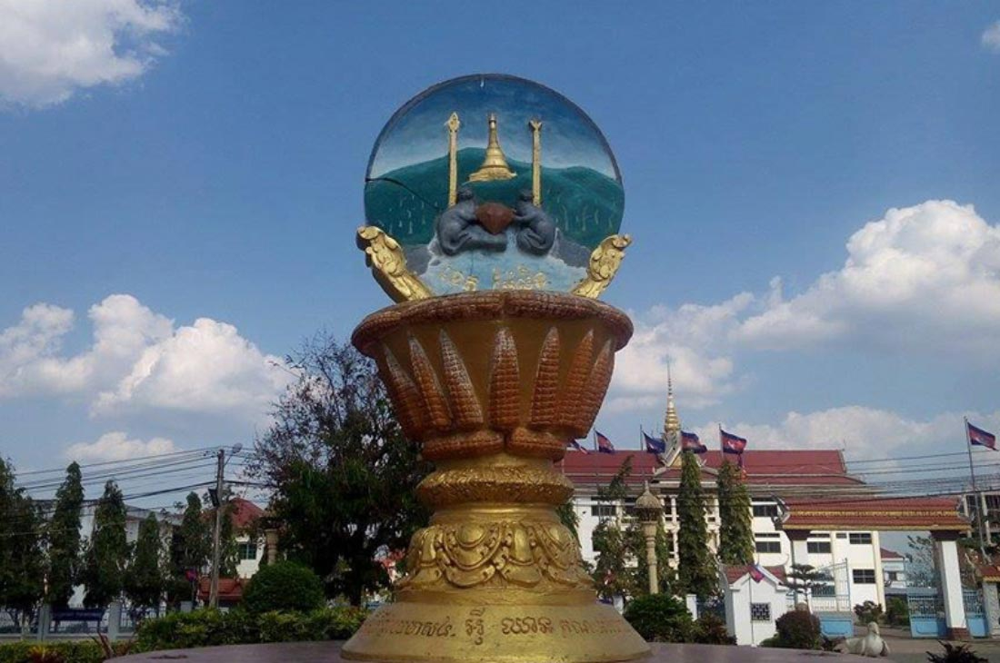
ខេត្តតូចលើភ្នំ ល្បីឈ្មោះដោយផ្លែឈើរដូវ និងត្បូងមានតម្លៃពីអតីតកាល។
ភ្នំត្បូងគ្រែក ស្វែងយល់បន្ថែម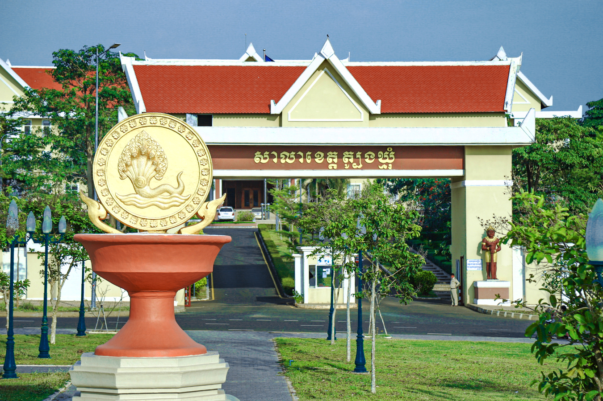
ដីធ្លីចម្ការកៅស៊ូបៃតងទូលាយ តំណាងសេដ្ឋកិច្ចកសិកម្មភាគខាងកើតប្រទេស។
ចម្ការកៅស៊ូ ស្វែងយល់បន្ថែមពីប្រាសាទបុរាណដ៏ធំបំផុតលើពិភពលោក រហូតដល់កោះស្រស់ស្អាតកណ្ដាលសមុទ្រ
អច្ឆរិយភាពស្ថាបត្យកម្មខ្មែរ និងជានិមិត្តរូបជាតិដ៏ធំបំផុតលើពិភពលោក ស្ថិតនៅខេត្តសៀមរាប។
ល្បីល្បាញដោយប្រាក់មុខសិលាដ៏អាថ៌កំបាំង ស្ថិតកណ្ដាលទីក្រុងព្រះនគរធំ។
ប្រាសាទដែលឫសឈើដ៏ធំពាក់ព័ន្ធជាមួយថ្មបុរាណ បង្កើតទេសភាពពិសេសមួយគ្មានពីរ។
ភ្នំមេឃខេត្តកំពត ជាកន្លែងទស្សនាភ្នំចុះអាកាសធាតុត្រជាក់ និងអគារបែបបារាំងចាស់។
ឆ្នេរខ្សាច់សដ៏ស្រស់ស្អាតតាមឆ្នេរខាងត្បូងប្រទេស ជាកន្លែងសម្រាកនិងកម្សាន្ត។
កោះទឹកថ្លាដ៏ល្បីល្បាញ ព័ទ្ធជុំវិញដោយឆ្នេរខ្សាច់ស និងព្រៃត្នោត។
ទឹកជ្រោះធម្មជាតិខេត្តមណ្ឌលគិរី ចំណុះទឹកខ្ពស់ ព័ទ្ធជុំវិញព្រៃឈើបៃតងស្រស់។
បឹងទឹកសាបធំបំផុតអាស៊ីអាគ្នេយ៍ ជីវភាពសហគមន៍ផ្ទះអណ្ដែតទឹកតាមតំបន់ជុំវិញ។
ប្រវត្តិសាស្ត្រខ្មែរមានអាយុកាលរាប់ពាន់ឆ្នាំ ចាប់ផ្ដើមពីនគរភ្នំ ចេនឡា រហូតដល់សម័យអង្គររុងរឿង ដែលបានបន្សល់ទុកមរតកស្ថាបត្យកម្មដ៏អស្ចារ្យសម្រាប់ពិភពលោក។
សព្វថ្ងៃនេះ វប្បធម៌នេះនៅតែរស់រវើកតាមរយៈពិធីបុណ្យ របាំប្រពៃណី សិល្បៈ និងជីវភាពប្រចាំថ្ងៃរបស់ប្រជាជនខ្មែរនៅគ្រប់ខេត្តទាំងអស់។
អាណាចក្រខ្មែរដ៏រុងរឿងចន្លោះសតវត្សទី៩ ដល់ទី១៥ ដែលកសាងប្រាសាទរាប់រយកន្លែង។
មរតកលោកជាច្រើនកន្លែងក្រៅពីអង្គរវត្ត ស្ថិតនៅស្ទើរគ្រប់ខេត្តទូទាំងប្រទេស។
ការគោរពចាស់ទុំ ជីវិតវត្តអារាម និងទំនាក់ទំនងសហគមន៍ជាស្នូលនៃសង្គមខ្មែរ។
របាំអប្សរាដ៏ថ្លៃថ្នូ តន្ត្រីប្រពៃណី និងសិល្បៈចម្លាក់ថ្មដែលបានទទួលស្គាល់ពិភពលោក។
ពិធីបុណ្យធំបំផុតប្រចាំឆ្នាំ អបអរដល់ចុងឆ្នាំចាស់ និងចាប់ផ្ដើមឆ្នាំថ្មី ពេញលេញដោយល្បែងប្រពៃណី។
ការប្រណាំងទូកតាមទន្លេនានា អបអរអំពាវនាវទឹកទន្លេត្រឡប់ចូលទន្លេមេគង្គវិញ។
ពិធីបុណ្យខាងព្រះពុទ្ធសាសនាដើម្បីរំលឹកគុណដល់បុព្វការីជន និងញាតិមិត្តដែលបានចែកឋានទៅ។
រសជាតិដ៏សម្បូរបែប រវាងជូរ ផ្អែម ប្រៃ និងហឹរ ជាមួយគ្រឿងផ្សំពីស្រែស្រូវ និងទន្លេ
ត្រីចំហុយក្នុងគ្រឿងសម្ល និងទឹកខ្ទិះដូង ជាមុខម្ហូបជាតិខ្មែរដ៏ល្បីល្បាញ។
ស៊ុបមីស្រូវ ជាមួយសាច់ និងបន្លែ ញ៉ាំពេលព្រឹកដ៏ពេញនិយម។
សាច់ជ្រូកអាំងជាមួយបាយក្ដៅ ញ៉ាំជាមួយបន្លែជ្រក់ ជាអាហារព្រឹកសាមញ្ញតែឆ្ងាញ់។
មីស្រូវជាមួយទឹកគ្រឿងត្រីលាយក្រឡុក ញ៉ាំជាមួយបន្លែស្រស់ជាច្រើនប្រភេទ។
ស៊ុបបន្លែបុរាណខ្មែរ ជាមួយប្រហុក និងគ្រឿងសមុទ្រឬសាច់។
ស៊ុបជូរផ្អែមប្រពៃណី ចម្អិនជាមួយត្រី ត្រសក់ និងម្រះ។
គ្រឿងផ្សំសំខាន់ក្នុងម្ហូបខ្មែរ ធ្វើពីត្រីដម្រំដមួយរយៈពេលយូរ ផ្ដល់រសជាតិពិសេស។
ជ្រើសរើសខេត្តមួយខាងក្រោម ដើម្បីរំលោតទៅមើលព័ត៌មានលម្អិត
មានសំណួរអំពីការធ្វើដំណើរនៅកម្ពុជា? សរសេរសាររកយើងខ្ញុំ ក្រុមការងាររបស់យើងរង់ចាំជួយ
យើងជាក្រុមអ្នកស្រឡាញ់ទេសចរណ៍ខ្មែរ ដែលចង់ចែករំលែកភាពស្រស់ស្អាតនៃប្រទេសកម្ពុជាទៅដល់អ្នកទាំងអស់គ្នា ទាំងជនជាតិខ្មែរ និងភ្ញៀវទេសចរណ៍អន្តរជាតិ។